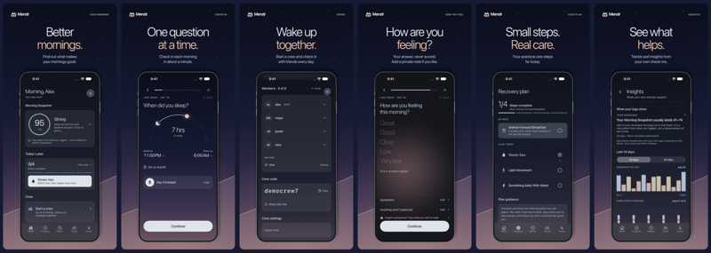
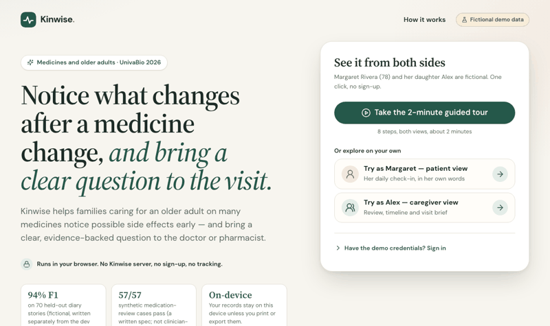

Mendr · Founder, Developer
June 2026 – present
Building an iPhone app for better mornings with friends (see projects).
Mendr: Better Mornings is an iPhone app for sleep and energy. Each morning you answer a one-minute check-in about sleep, food, water, movement and how you feel, and Mendr sums it up as a Morning Snapshot from 0 to 100. You can start an invite-only crew of up to eight friends who check in together, and see trends from your own records. Optional accounts add friends and two-week seasons.
I'm the founder and developer. I started Mendr in June 2026 and build the app in SwiftUI.
Live on the App Store. The core journal works without an account.

A browser app for families caring for an older parent on many medicines. The parent checks in daily in their own words, Kinwise lines those check-ins up with medicine changes and cited geriatric prescribing criteria, and the family gets one reviewed page of questions to bring to the doctor or pharmacist. It runs entirely in the browser, with no server or sign-up.
Built with Neil Shah for the UnivaBio hackathon (theme: AI for Human Health), using AI coding tools.
Top 100 of 486 projects at UnivaBio 2026. A working prototype on fictional data, not yet tested with real patients, caregivers or clinicians.

An entry in a Kaggle competition on decoding imagined movement from a low-cost 8-channel EEG headset, aimed at rehabilitation. The models have to work on people they were never trained on.
I used an AI coding agent to build the pipeline.
The competition runs until February 2027. The code stays private until it ends.
Research with Prof. Vicky Zhu on attention and gating in neural-network models.
Early stage: reading the literature and settling the research question.
June 2026 – present
Building an iPhone app for better mornings with friends (see projects).
July 2025 · Bucharest
August 2025 · Bucharest
Expected May 2030 · Wellesley, MA
2022 – 2026 · Bucharest
I'm a first-year at Babson, from Bucharest. I'm interested in how the brain works and how to model it with neural networks, and I'm learning computer science and math to get there.
Right now I'm building Mendr and starting a research project with Prof. Vicky Zhu.